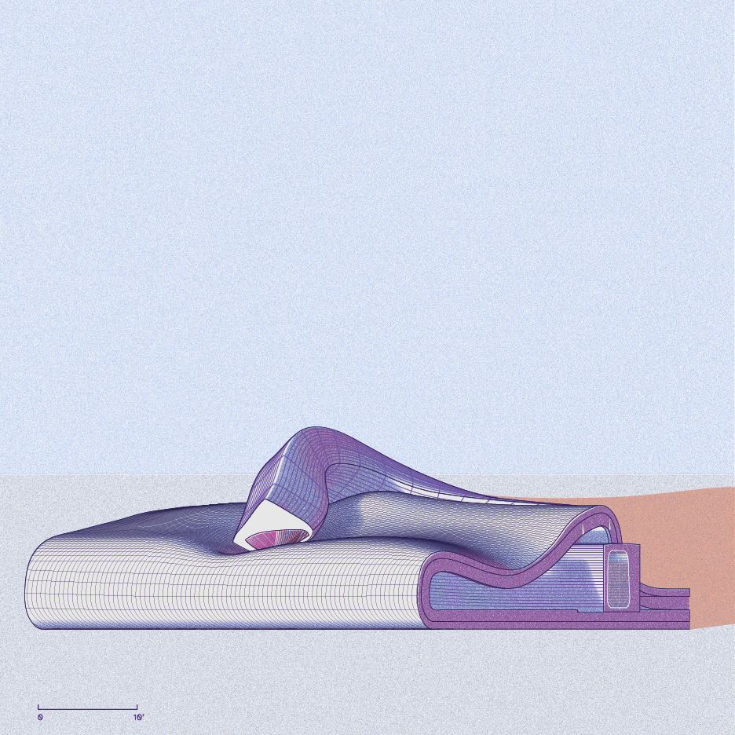
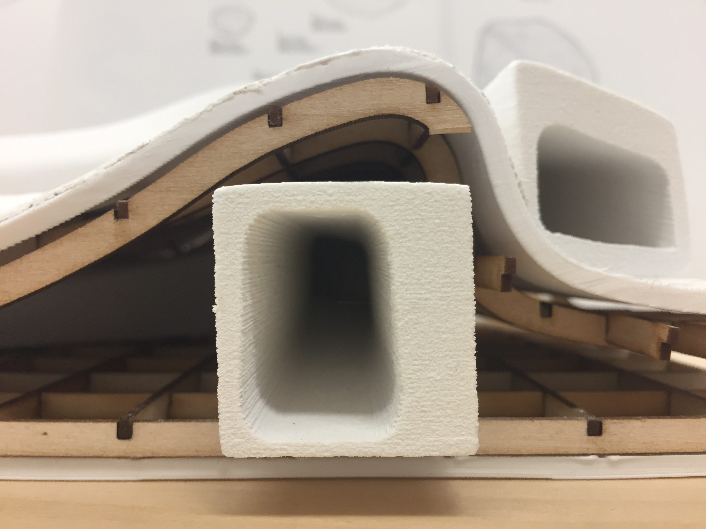

Studio: Introductory design
Instructor: Benjamin Freyinger
Fall 2019
A folly comprised of two doppelgängers and
an egg crate shell. The geometry of the
doppelgängers is derived from a rectilinear
bar primitive which undergoes a deformation
via a guillotine-style jig.
tags: form, posture, character, sculpey

01. Roof view

02. Deformation with jig

03. Formal process

04. NE elevation

08. Physical model

09. Study model